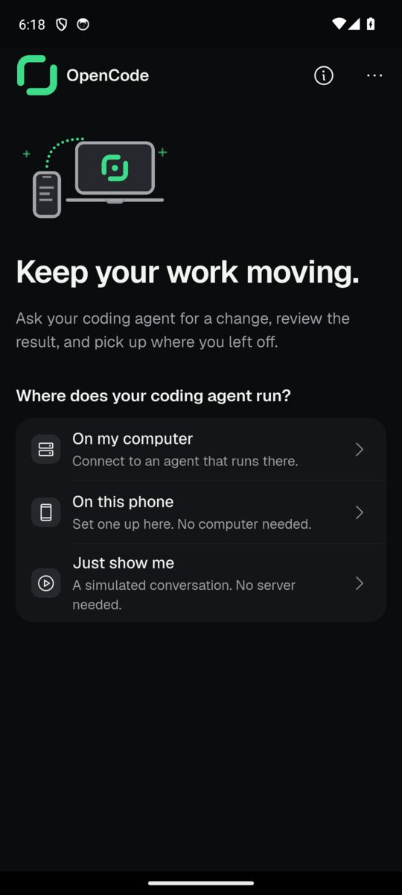
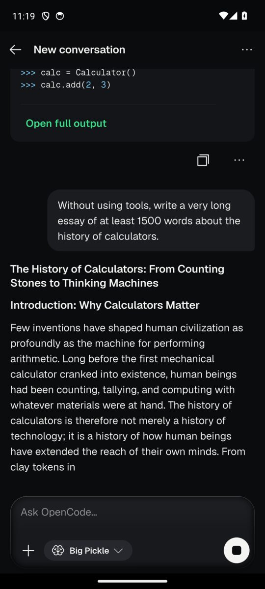
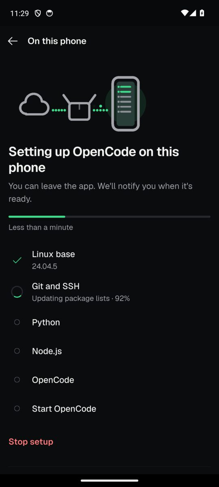
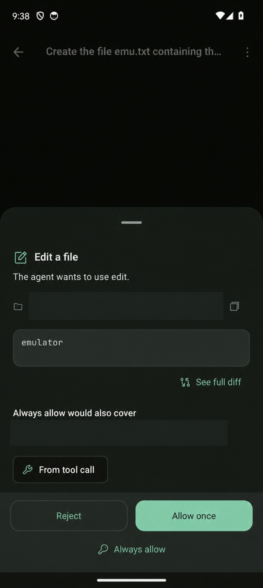
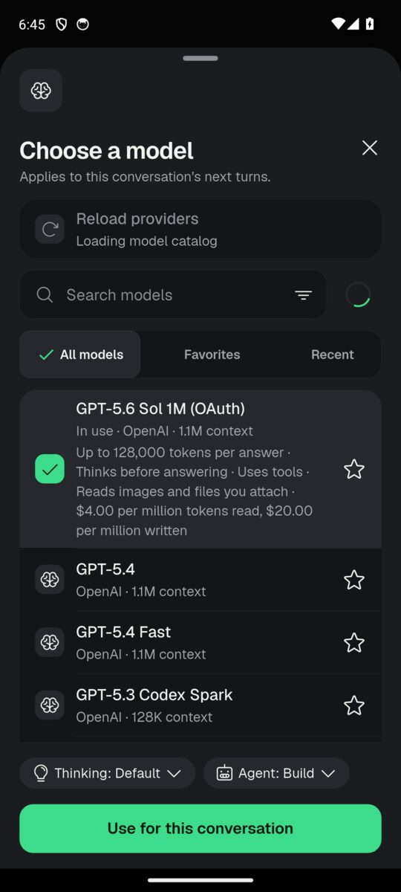
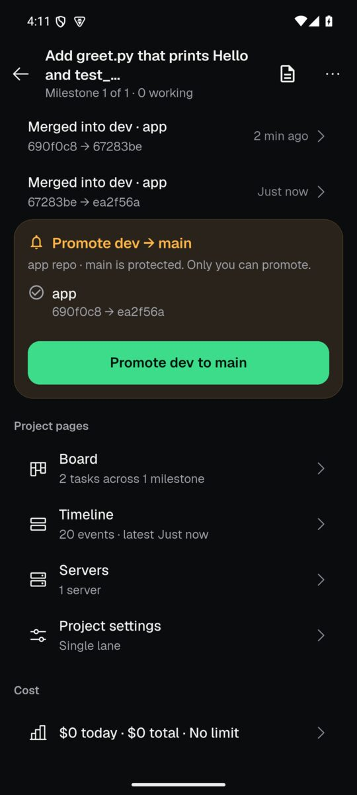

Run Claude Code and OpenCode on your Android phone.
No computer. No Termux.
Ask for a change, watch it take shape, and review the result. Your coding agent can run right here on your phone — or on your computer, with you in control from anywhere.
Android 8 or newer. On-phone setup needs a 64-bit phone.


From first setup
to the next commit.
The work stays readable on a small screen. Follow the agent, choose its model, and approve the changes that need you.
Set up on your phone
Guided setup installs Ubuntu and OpenCode inside the app. Follow each step, then open your project.

Approve before it acts
Review a permission request in the conversation. Look closer at a change before deciding to allow it.

Choose your model
Pick from the models available on your server. Try OpenCode's free model or add your own provider.

Give AI Team a project
A planner, workers and a checker work through your milestones. Review the receipts before promoting to main.

Real Android emulator captures from QA; personal paths are masked in the approval image. AI Team is new; physical-phone testing is still underway.
Your phone.
Your project.
OpenCode Mobile connects to the servers you choose. It isn't a hosted service and doesn't include a model subscription.
Download for Android-
Install the APK
Download the latest release from GitHub. Android will ask you to allow installation from outside the Play Store.
-
Choose where to work
Set up on your phone, or connect to OpenCode on your computer. Use Wi-Fi for the first on-phone download.
-
Start a conversation
Choose a model and ask for a change. Add a provider key in Settings if you want models beyond the free option.
مساعدك البرمجي،
على هاتفك.
شغّل Claude Code وOpenCode على هاتف أندرويد، دون حاسوب أو Termux. أو تابع عمل الوكيل على حاسوبك، وراجع التغييرات ووافق عليها من هاتفك.
التطبيق متاح بالعربية والإنجليزية. يتطلب أندرويد ٨ أو أحدث، وهاتفًا بمعمارية ٦٤ بت للتشغيل المحلي.